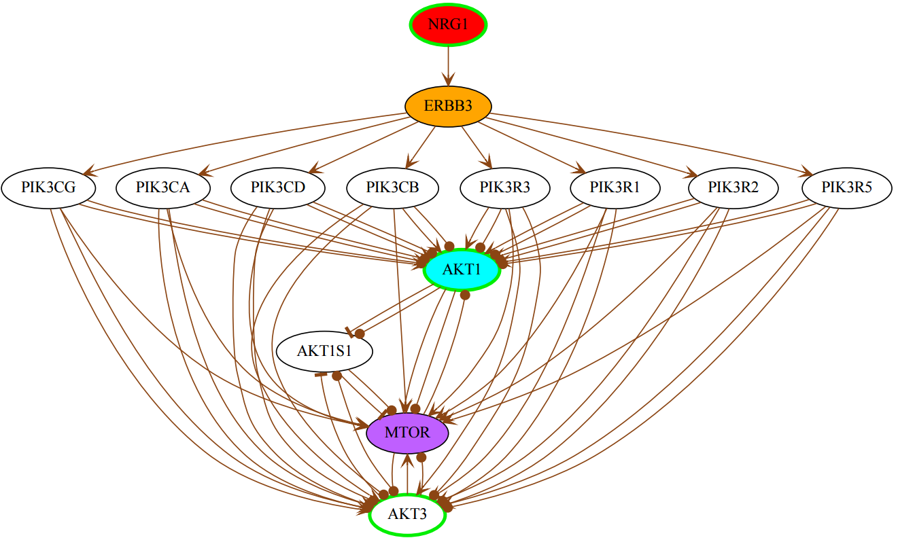
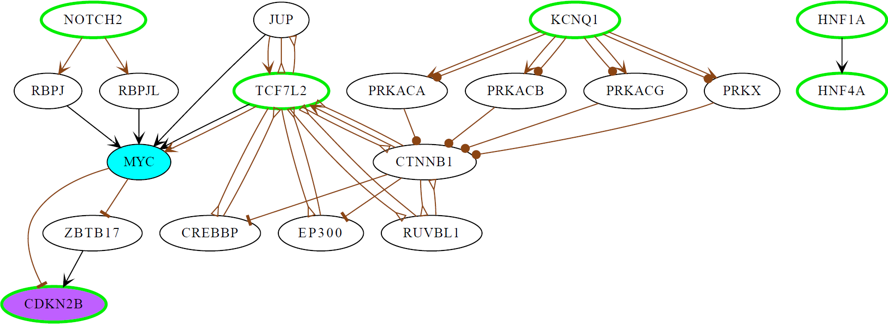

Pipeline
The pipeline generates a biochemical network basing on the user's query, and searches for a smallest combination of driven nodes via which one should be able to control a user-selcted set of target nodes there.
The pipeline consists of the following three parts:
- DATA IMPORT: Integrate the user’s defined input into the pipeline. Either generate the network with Moksiskan, basing on the user’s defined input or get the user-defined network in GRAPHML format.
- NETWORK CONTROLLABILITY: Compute the minimal set of driven nodes for the given target genes in the network generated at the previous step.
- POSTPROCESSING AND OUTPUT: Highlight those driven nodes that can be targeted by FDA approved drugs. Generate the network file (GRAPHML, Cytoscape and PDF) from the original network and by adding additional annotations to the nodes representing selected driven genes/proteins, drug-targetable driven genes/proteins, if any, and target genes. Generate CSV tables with the information about the driven genes/proteins, and the list of target genes and their control paths from the driven nodes.
Input
The pipeline currently accepts the following inputs from the user:
- List of Genes/Proteins to Generate the Network: List of genes/proteins that will be used as seed nodes by Moksiskaan to generate the network. This input can be any gene/protein name from Homo sapiens genome.
- Custom network: The user has an option to use a custom network in the pipeline instead of the Moksiskaan network.
- Cancer Cell Lines: A cancer cell line whose set of essential proteins will be used as target nodes for the network controllability algorithm. These nodes can act also as seed nodes if the user decides so.
- List of Additional Target Genes: A set of target nodes defined in addition to those in the “Cancer Cell Lines". These nodes can act also as seed nodes if the user decides so.
- Gap Between Genes: The gap parameter used by Moksiskaan to generate the network.
- Target By Drug: Defines if the pipeline includes also the drug target information for the driven nodes. If so, then the driven nodes for which there exist FDA approved drugs will be specifically highlighted in the output of the pipeline.
- User defined drug target genes to be included in the analysis: User has an option to include also set of custom drug target proteins. If the "Target By Drug" field is chosen, the user-defined custom drug targets will be considered along with the FDA-aproved drugs targets.
Output
- driven.csv: The drug-targetable driven nodes and the number of cancer essential genes they control.
- extra.csv: Cancer essential genes controlled by non-drug target genes.
- details.txt: Details result based on our heuristic search algorithms, the control path for each controlled target node is provided.
- graph.xml: The generated network and can be visualized in Cytoscape or Gephi
- visual.pdf: Visualization of
controlled graph from GraphML software as a PDF. The color codes are defined as follows:
- Green circle - mark seed nodes
- aqua color - mark driven nodes that are also drug targets (either for FDA approved or custom user-defined drugs)
- purple color - mark target nodes that are being controlled from the driven nodes that are drug targets
- red color - mark driven nodes that are not drug targets
- yellow color - mark target nodes that are being controlled from the driven nodes that are not drug targets
Sample Case Studies:
Case study 1: Breast cancer
INPUT:| List of Genes/Proteins to Generate the Network | List of Additional Target Genes | Gap Between Genes |
|---|---|---|
| AKT1 AKT3 NRG1 |
MTOR ERBB3 |
One |
OUTPUT:
(Please note that NetControl4BioMed is a stochastic tool and for the same input it may give one of several different outputs. The following is just one of possible outputs for the input above.)
| driven.csv | extra.csv | details.txt |
| AKT1 | NRG1 | NRG1 AKT1 ERBB3 <- NRG1 MTOR <- AKT1 |

Case study 2: Type 2 diabetic
INPUT| List of Genes/Proteins to Generate the Network | List of Additional Target Genes | Gap Between Genes |
|---|---|---|
| KCNQ1 NOTCH2 TCF7L2 HNF1A HNF4A |
CDKN2B | Two |
OUTPUT:
(Please note that NetControl4BioMed is a stochastic tool and for the same input it may give one of several different outputs. The following is just one of possible outputs for the input above.)
| driven.csv | extra.csv | details.txt |
| MYC | CDKN2B <- MYC |

Case study 3: Alzheimer's disease
INPUT| List of Genes/Proteins to Generate the Network | List of Additional Target Genes | Gap Between Genes |
|---|---|---|
| BDNF CHRNA6 CHRNA7 CHRNB4 CR1 EFNA5 EGFR EPHA1 EPHA4 GAB2 IRS1 NOS3 NTRK2 PIK3R1 PPP1R3A PPP3CB PTGS2 SOS2 |
NOS3 | Two |
OUTPUT:
(Please note that NetControl4BioMed is a stochastic tool and for the same input it may give one of several different outputs. The following is just one of possible outputs for the input above.)
| driven.csv | extra.csv | details.txt |
| MTOR | CR1 | NOS3 <- AKT1 <- MTOR |